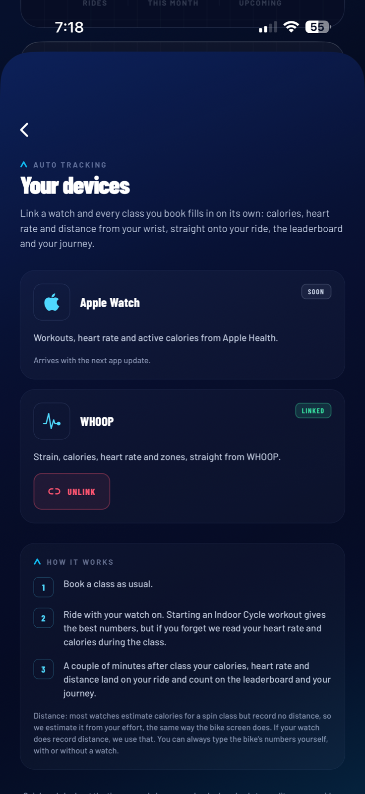

SpinIn · Immersive Spinning
WHOOP integration
SpinIn is the booking app of an indoor cycling studio in Beirut, Lebanon. Members who wear a WHOOP link it once, and every class they book is then filled in with their WHOOP workout for that hour.

How a member uses it
- Link once. Profile, Your devices, Connect WHOOP. The member signs in on WHOOP's own page and approves. SpinIn never sees the password.
- Book a class and ride with the strap on, as usual.
- The ride fills itself. When WHOOP has scored the workout, the member's ride summary shows calories, average and max heart rate, strain and time in heart rate zones, labelled as coming from WHOOP.
- It counts. Calories and distance add to the member's totals, their journey and the studio leaderboard.
What we read from WHOOP
- Scope
read:profile: the WHOOP user id, so webhook events reach the right member. - Scope
read:workout: only the workout that overlaps a class the member booked. Calories, average and max heart rate, strain, heart rate zones, and distance when WHOOP recorded one. With no distance, a virtual one is estimated from the calories and labelled as an estimate. - Workout webhooks (updated, deleted) keep a rescored or deleted workout correct in the app.
What we do not do
- We never write to WHOOP. Access is read only.
- Workouts outside booked classes are ignored and not stored.
- Heart rate, strain and zones are shown only in the member's own ride summary.
- No selling or sharing of data, and no ads.
- Unlink deletes the member's WHOOP tokens from our servers. Deleting the account removes all their data.